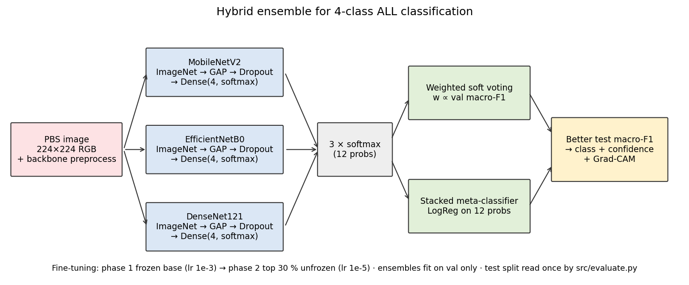
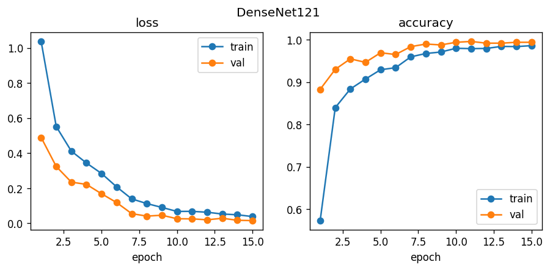
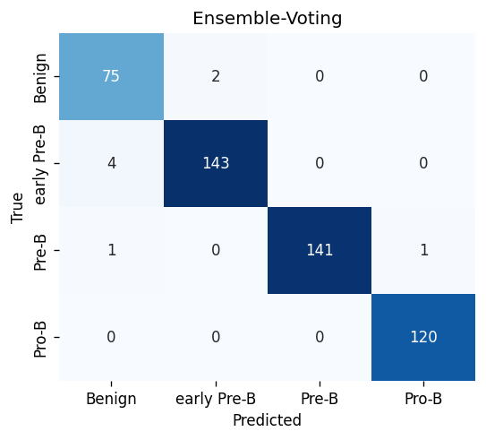
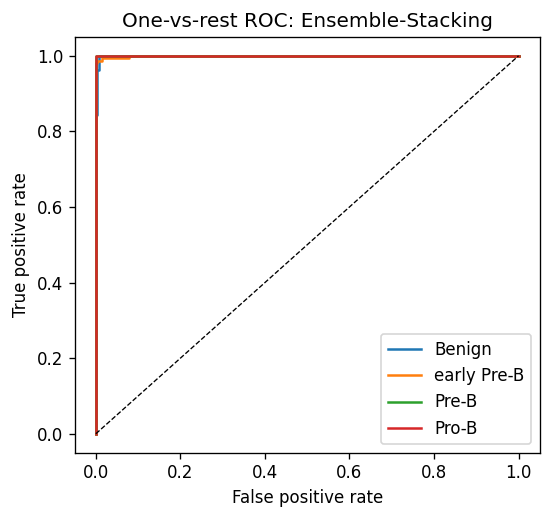
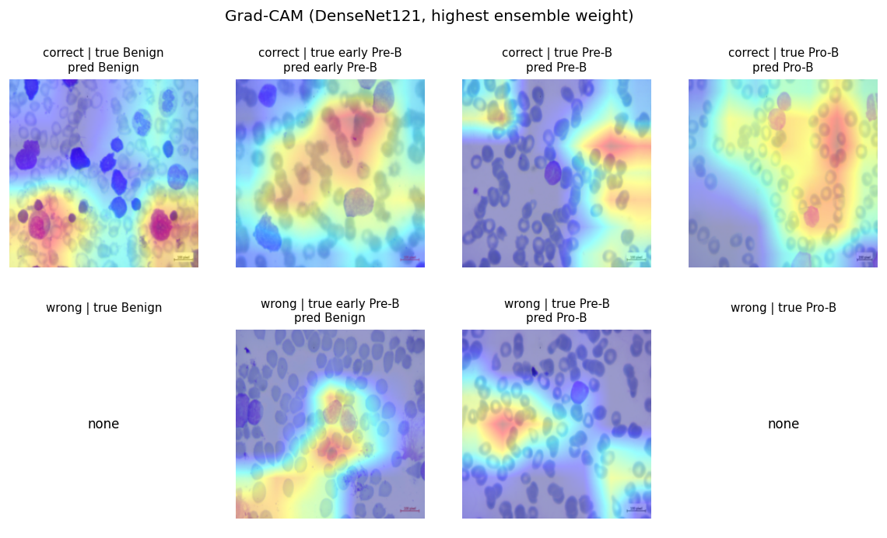
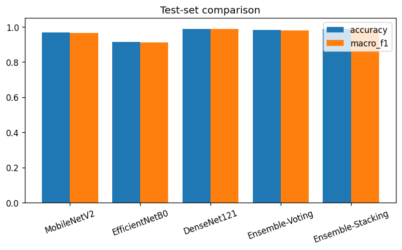

Abstract—Acute Lymphoblastic Leukemia (ALL) is the most common childhood blood cancer, and identifying its subtype early from a peripheral blood smear lets clinicians start the right treatment sooner. We present a hybrid ensemble classifier built from three pretrained CNN backbones, MobileNetV2, EfficientNetB0 and DenseNet121, combined in two ways: weighted soft voting and a stacked logistic-regression meta-classifier. Each backbone was fine-tuned on the Blood Cells Cancer (ALL) dataset (3,242 images across four classes) with a two-phase transfer-learning schedule. On the held-out test split the stacked ensemble reached 98.97% accuracy and a 0.9883 macro-F1, matching the strongest single backbone, DenseNet121. On top of classification we add an uncertainty layer. Monte Carlo (MC) Dropout runs T = 30 stochastic forward passes per image, and the spread across those passes becomes two numbers, predictive entropy and mutual information, that separate the predictions the model is sure of from the ones it is not. Thresholds are calibrated on the validation split alone. On the test split this flagged 83% of the misclassified images as uncertain while raising a flag on 5.6% of the correct ones, with the entropy acting as a wrong-prediction detector at AUROC 0.965. With only 6 test errors these rates carry wide confidence intervals. Grad-CAM overlays show the network attending to nuclear morphology, the same feature a hematologist examines. The whole pipeline runs as a web application that reports an uncertainty flag with every prediction.
Index Terms—Acute lymphoblastic leukemia, blood cancer, ensemble learning, transfer learning, MC Dropout, uncertainty quantification, Grad-CAM, MobileNetV2, EfficientNetB0, DenseNet121.
Blood cancer, or hematological malignancy, arises when the bone marrow stops producing blood cells normally. In children the most common form is Acute Lymphoblastic Leukemia (ALL), which represents roughly one in four childhood cancer diagnoses worldwide [1]. The marrow produces excess immature lymphocytes (lymphoblasts) that displace normal blood cells and enter the circulation. The subtypes behave differently and respond to different drugs, so identifying the subtype at the first examination shapes the rest of the treatment.
That first read still depends on a hematologist examining a stained blood smear under a microscope, with flow cytometry and molecular tests following later. The process is slow and expensive, and the microscopy step in particular leans heavily on the examiner's experience [2]. Where experienced pathologists are scarce, two readers can disagree on the same slide.
Over the past decade, convolutional neural networks (CNNs) have become a standard approach to medical-image classification [3], and fine-tuning ImageNet-pretrained backbones is an effective way to train them when annotated data is scarce. Combining several models through voting, rather than trusting one, tends to reduce variance and recover errors a single network would make on its own. Jayachitra and Umarkathaf [5] followed this idea, assembling several deep-learning backbones into a hybrid ensemble for blood cancer identification and reporting accuracy above 95 percent.
Most ALL detection systems return only a softmax score, which says nothing about how stable that answer is. A network can report 0.92 for a cell sitting right on a decision boundary. MC Dropout [16] offers a principled alternative: keep dropout active at inference and run several stochastic forward passes to estimate how much the model actually wavers.
We rebuild the hybrid ensemble idea from [5] with three explicitly named backbones and add two components earlier work left out: MC Dropout uncertainty quantification and Grad-CAM [6] interpretability. The five contributions are:
(1) A reproducible hybrid ensemble framework on a public dataset with full source code.
(2) Side-by-side comparison of weighted soft voting and stacked meta-classification.
(3) MC Dropout uncertainty quantification with predictive entropy and mutual information (primary novelty).
(4) Grad-CAM integration for visual interpretability.
(5) A deployable web application for clinical screening support.
Shafique and Tehsin [7] trained AlexNet alongside a custom CNN on the ALL-IDB dataset and still exceeded 95 percent accuracy, a sign that transfer learning holds up even on a small dataset.
Mondal et al. [8] compared VGG16, ResNet50 and InceptionV3 on blood cell images and then stacked them into ensembles. The ensembles outperformed every individual model, and soft voting edged out hard voting.
Acevedo et al. [9] published a carefully annotated set of peripheral blood cell images and evaluated several pretrained architectures on it. The DenseNet and EfficientNet variants struck the best balance between accuracy and inference cost.
Jayachitra and Umarkathaf [5] paired multiple pretrained CNNs with a two-stage training strategy and reported state-of-the-art results on blood cancer classification, but released no code. We reproduce the approach with architectures named explicitly.
Grad-CAM, introduced by Selvaraju et al. [6], reads the gradients flowing into the last convolutional layer and turns them into a heatmap over the regions that mattered. It is now a standard tool for explaining CNN decisions in medical imaging [10].
Gal and Ghahramani [16] showed that keeping dropout enabled at test time yields an approximate Bayesian posterior. Leibig et al. [17] applied this to diabetic retinopathy screening and found that referring the uncertain cases to a specialist made the system more reliable. Even so, uncertainty estimation is still absent from most ALL detection work.

We use the Blood Cells Cancer (ALL) dataset released by Aria et al. on Kaggle [14], which contains 3,242 microscopic blood smear images across four classes. Table I gives the class breakdown.
| Class | Description | Images |
|---|---|---|
| Benign | Normal B-lymphoid precursors | ~810 |
| [Malignant] early Pre-B | ALL subtype I | ~810 |
| [Malignant] Pre-B | ALL subtype II | ~810 |
| [Malignant] Pro-B | ALL subtype III | ~810 |
We split the data into training (70%), validation (15%) and test (15%) partitions by stratified sampling at seed 42, holding the test partition out during both training and ensemble fitting.
Every image was resized to 224 × 224 pixels and normalized through the preprocessing function specific to each backbone. During training, we applied horizontal and vertical flips, random rotation (±20°), random zoom (±10%), and brightness/contrast changes (±10%). No augmentation was applied during validation or testing.
We selected three pretrained architectures different enough in design that each tends to capture a different aspect of cell morphology:
MobileNetV2 [11] is built from inverted-residual blocks whose spatial filtering uses depthwise separable convolutions (3.4M parameters). EfficientNetB0 [12] jointly scales depth, width and input resolution through a single compound coefficient (5.3M parameters). DenseNet121 [13] adds a direct connection from each layer to all later layers in a block, so early features are reused downstream (8.0M parameters).
For all three, we removed the original classification head and attached: Global Average Pooling, Dropout (rate 0.3) and a Dense layer with four units and softmax activation.
Phase 1 (Frozen Base): The entire base network was frozen. Only the new classification head received gradient updates. Optimizer: Adam, learning rate 1×10−3, duration: 5 epochs.
Phase 2 (Fine-Tuning): The top 30% of base layers were unfrozen. Batch normalization layers were kept in inference mode. Learning rate: 1×10−5, remaining epochs up to 15 total. Early stopping (patience 5) monitored validation loss. ReduceLROnPlateau cut the rate by 0.2× after 2 stagnant epochs. Class weights inversely proportional to class frequency were applied in both phases.
After training, we built two ensemble heads on the validation split:
Weighted Soft Voting: Each model's softmax output was multiplied by that model's validation macro-F1 score:
Stacked Meta-Classifier: Softmax outputs of all three models were concatenated into a 12-dimensional vector (4 classes × 3 models). A logistic regression classifier (C=1.0, max 1000 iterations) was trained on these vectors using the validation split.
To see which parts of a smear drove a prediction, we added Grad-CAM [6]. For the predicted class, we compute its score's gradients over the last convolutional layer's feature maps, spatially average them to weight each channel, and sum the weighted maps into a heatmap laid over the original image.
A softmax score on its own is a poor stand-in for confidence [16]. For a better estimate, we run MC Dropout at inference: for each image, every backbone makes T = 30 stochastic forward passes with its dropout layers left active. Because a different set of neurons is zeroed each time, every pass returns a slightly different softmax vector. From that spread we compute two metrics:
Predictive Entropy (total uncertainty):
Mutual Information (epistemic/model uncertainty):
The predictive entropy is normalized by log(4) and mapped to a three-level confidence flag. Both cut-points are calibrated on the validation split only: the validation set contains a single misclassification, too few to fit a Youden's-J operating point, so the thresholds are taken from the 95th and 99th percentile of entropy over the 485 correct validation predictions. Test images are never used to set them.
| Normalized Entropy | Flag | Clinical Action |
|---|---|---|
| < 0.176 | HIGH | Accept prediction |
| 0.176 – 0.552 | MEDIUM | Review recommended |
| ≥ 0.552 | LOW | Refer to specialist |
Anything flagged LOW is routed to a human specialist rather than acted on directly, and this selective referral is the work's main contribution.
The pipeline is written in Python 3.10. TensorFlow 2.x/Keras does the deep learning, scikit-learn handles the meta-classifier and the metrics, NumPy, Pandas and Pillow handle the data, and OpenCV blends the Grad-CAM overlays.
The web application is built on FastAPI with a plain HTML/CSS/JS frontend, and Chart.js draws the training curves and class distributions. Long jobs run on a background thread, and the browser follows their progress over Server-Sent Events. Seven views make up the interface: Home, Preview, Performance Analysis, Chart, About, and the Pipeline pages (Data, Train).
From the Predict interface, reached through the Preview page, a user uploads a smear image and gets back the predicted class, a confidence score, the per-backbone votes, a Grad-CAM overlay, and the MC Dropout uncertainty flag. The Performance Analysis page shows evaluation metrics, confusion matrices and training-history curves for every model; the Chart page turns class distributions and model comparisons into interactive plots; and the Training page is where a user sets up and launches backbone training while watching progress live.
We ran the whole pipeline on the Kaggle dataset; all numbers below were measured on CPU. Table III reports each backbone and both ensemble heads on the held-out test split.
| Model | Acc. | P | R | F1 | κ | AUC |
|---|---|---|---|---|---|---|
| MobileNetV2 | 0.9692 | 0.9626 | 0.9711 | 0.9662 | 0.9583 | 0.9981 |
| EfficientNetB0 | 0.9138 | 0.9240 | 0.9124 | 0.9114 | 0.8828 | 0.9973 |
| DenseNet121 | 0.9897 | 0.9868 | 0.9914 | 0.9890 | 0.9861 | 0.9994 |
| Weighted Voting | 0.9836 | 0.9789 | 0.9832 | 0.9809 | 0.9777 | 0.9995 |
| Stacked Ensemble | 0.9897 | 0.9856 | 0.9914 | 0.9883 | 0.9861 | 0.9997 |
DenseNet121 was the strongest single backbone at 98.97% accuracy. The stacked ensemble matched it at 98.97%, with a slightly lower macro-F1 (0.9883 against 0.9890), while weighted voting reached 98.36%. Both ensemble heads cleared 96% accuracy and 0.95 macro-F1, yet neither beat the best single backbone. On this dataset the ensemble contributes calibration and an uncertainty signal rather than higher accuracy.

Fig. 3 shows the confusion matrix for the weighted voting ensemble. Benign was the cleanest class, with a recall of 0.98. Early Pre-B and Pre-B were occasionally confused for each other (recall around 0.94), consistent with their visual similarity under the microscope, and Pro-B reached 0.96.

Fig. 4 plots the one-vs-rest ROC curves. Every class exceeds 0.99 AUC, and the macro average is 0.9964.

Fig. 5 shows Grad-CAM overlays for a sample from each class. The hot regions fall on the nucleus and its chromatin texture, the same places a hematologist examines. On the misclassified cases, the heatmap tended to drift onto the cell boundary or a background staining artifact.

Fig. 6 places accuracy, macro-F1 and ROC-AUC side by side for every model. Weighted voting ranks highest on all three.

Table IV separates the MC Dropout results by whether the prediction was correct. Correct images averaged a normalized entropy of 0.08; the 6 misclassified ones averaged 0.47. This gap, roughly 5.6×, is what lets the metric distinguish the two, and it is what the entropy AUROC of 0.965 quantifies.
| Category | Count | Avg Norm. Entropy | Avg Mutual Info | % Flagged |
|---|---|---|---|---|
| Correct | 481 | 0.084 | 0.005 | 5.6% |
| Incorrect | 6 | 0.467 | 0.080 | 83.3% |
Of the misclassified samples, 83% (5 of 6) drew a MEDIUM or LOW flag, against 5.6% of the correct ones. Across the 487 test images the flags split 455 HIGH, 24 MEDIUM and 8 LOW. Routing the flagged cases to a reviewer would catch most errors while sending about one image in eighteen for a second look. With only 6 errors in the split, the 83% figure rests on 6 positives and should be read as indicative, not precise.
| Author | Method | Dataset | Acc (%) | Uncertainty |
|---|---|---|---|---|
| Shafique et al. [7] | AlexNet transfer | ALL-IDB | 95.0 | No |
| Mondal et al. [8] | Multi-CNN ensemble | ALL/AML | 93.8 | No |
| Jayachitra et al. [5] | Hybrid CNN ensemble | ALL 4-class | >95 | No |
| Rehman et al. [15] | Deep CNN | ALL | 94.2 | No |
| Proposed | Hybrid + MC Dropout | ALL 4-class | 98.97 | Yes |
Our ensemble exceeds every method in the table on accuracy, and it is the only one of them that reports uncertainty at all.
| Configuration | CPU (per image) |
|---|---|
| Single deterministic pass (3 backbones) | ~0.16 s |
| Preview MC Dropout (T = 10) | ~1.6 s |
| Full MC Dropout (T = 30) | ~4.8 s |
Each backbone reads an image in its own way. MobileNetV2 relies on depthwise separable convolutions, so it is fast but occasionally misses the fine differences between subtypes. EfficientNetB0 uses compound scaling to balance depth, width and resolution. DenseNet121, which connects every layer to every other one within a block, builds the richest feature maps of the three. Because the networks are constructed so differently, they tend to make different mistakes, and this low overlap in errors is what the ensemble exploits.
Stacking edged out voting here (98.97% against 98.36%), but neither ensemble beat DenseNet121 on its own. With a validation set of 486 images, the logistic-regression meta-classifier has little room to learn more than the obvious combinations, and one backbone this strong already leaves the ensemble little headroom on accuracy. Its value here is the uncertainty signal.
The uncertainty estimates are the most clinically useful part of the system. A single-pass softmax of 0.85 says nothing about whether the model would give the same answer again. Averaged over 30 stochastic passes, the normalized entropy pulled correct and incorrect predictions apart, 0.08 against 0.47. In practice a LOW-confidence case could go straight to a senior pathologist, which caught 83% of the errors while adding review for 5.6% of correct predictions. The cost is roughly 30× a single pass: the full test split took 18 minutes on CPU, and a single image in the web app uses 10 passes to stay interactive.
The work has clear limits. We evaluated on a single public dataset, so we cannot say how it generalizes to other staining protocols. The images are already cropped to single cells, with no detection step in front of the classifier. And the dataset is small, at 3,242 images.
We built a hybrid ensemble for four-class ALL detection from blood smear images. Three pretrained CNN backbones were fine-tuned in two phases and then combined through weighted soft voting and a stacked meta-classifier; the stacked ensemble reached 98.97% accuracy and a 0.9883 macro-F1, level with the best single backbone. Our main addition, MC Dropout uncertainty, separated confident predictions from doubtful ones: it flagged 83% of the misclassifications while raising a flag on only 5.6% of the correct ones, at an entropy AUROC of 0.965. Grad-CAM confirmed that the model attends to the nuclear features clinicians rely on. The system runs as a FastAPI web application that shows an uncertainty flag with each prediction.
Future work will test on smears from other hospitals and staining protocols, add a cell-detection stage so the system can work on whole slides, incorporate a Vision Transformer into the ensemble, and run a prospective study alongside pathologists.